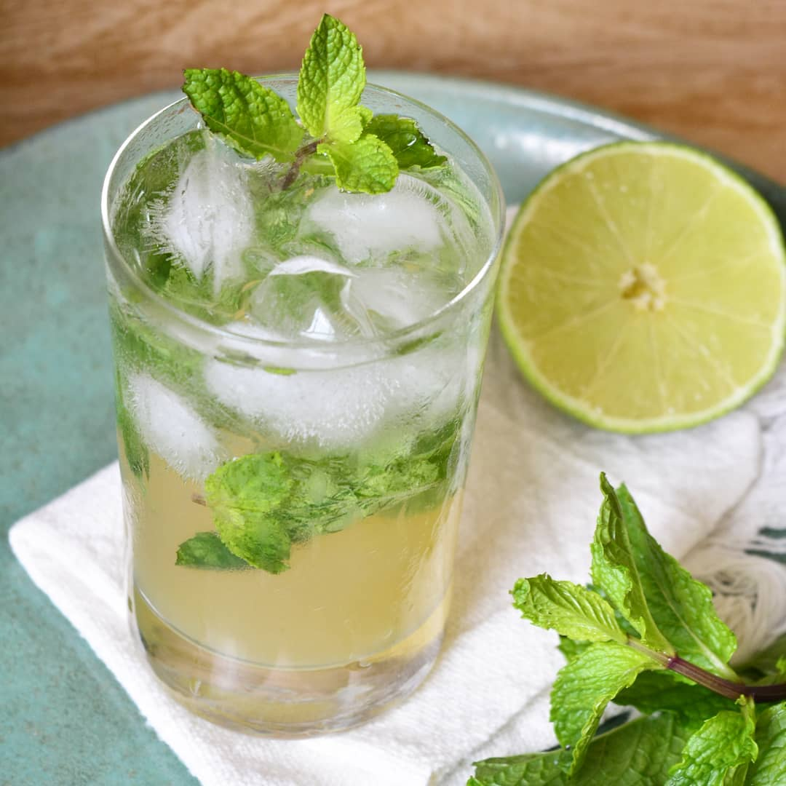

Ingredientes
- 50 ml de rum branco
- 25 ml de suco de limão
- 10 folhas de hortelã
- 1 colher de sopa rasa de açúcar
- Água com gás a gosto
- Gelo a gosto
Modo de Preparo
- Em um copo, adicione o suco de limão, o açúcar e misture para dissolver.
- Com um pilão ou com as mãos, macere as folhas de hortelã, coloque no copo e misture.
- Acrescente o rum e misture.
- Coloque o gelo e complete com a água com gás.
- Decore com folhas de hortelã e sirva! Bom apetite.
MOJITO
Esse coquetel com mais de 100 anos não tem sua origem tão bem documentada quanto o daiquiri ou a cuba-libre. Sabe-se que floresceu na noite de Havana usando ingredientes nativos do Caribe.
